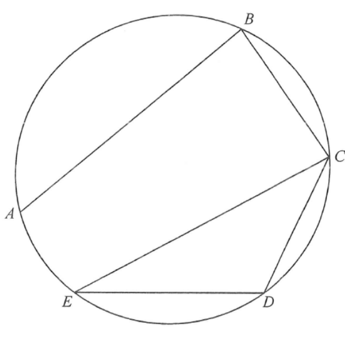

圓形 · 半圓上的角與同弓形內的角

$$AC=\sqrt{10^{2}+5^{2}}=\sqrt{125}\approx11.18\ \text{cm}$$
因 $\angle ABC=90^{\circ}$，$AC$ 就是圓的直徑。
$$\angle ADC=90^{\circ}$$
（亦可用圓內接四邊形對角互補：$\angle ADC=180^{\circ}-90^{\circ}=90^{\circ}$。）
$$\angle CAD=\angle CED=40^{\circ}$$
$$CD=AC\sin40^{\circ}=\sqrt{125}\times0.6428\approx7.19\ \text{cm}$$
準確至最接近的 cm，$CD\approx7\ \text{cm}$，答案 C。